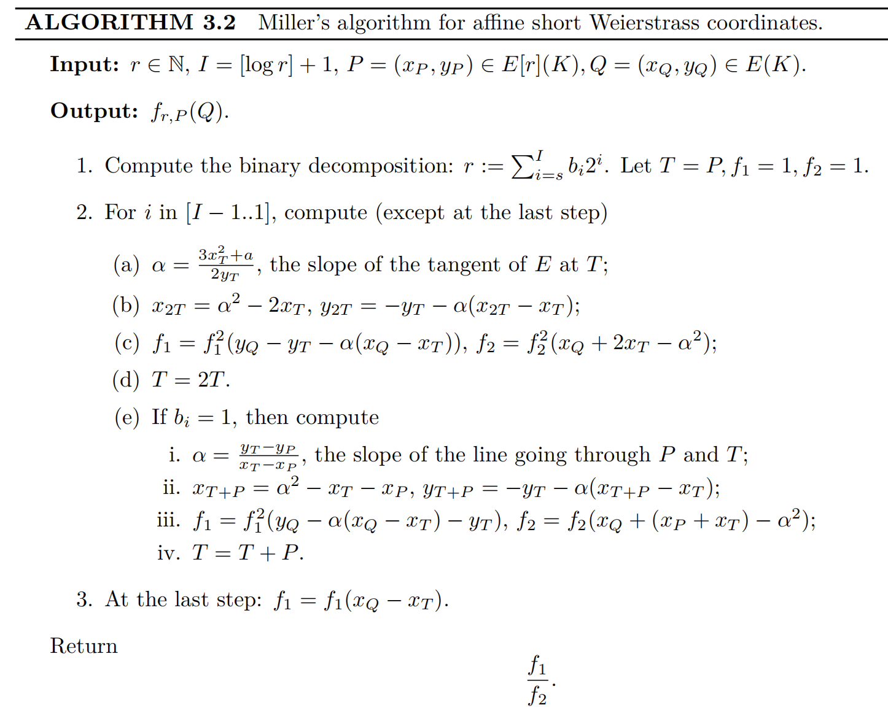
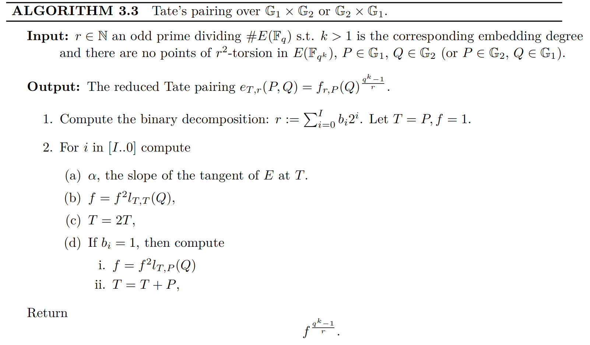
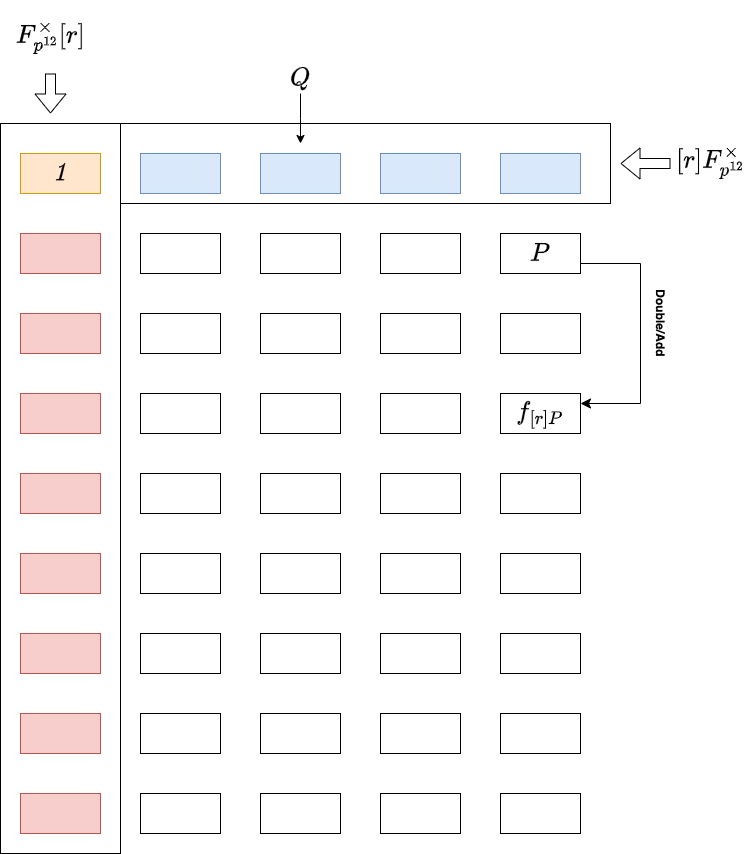
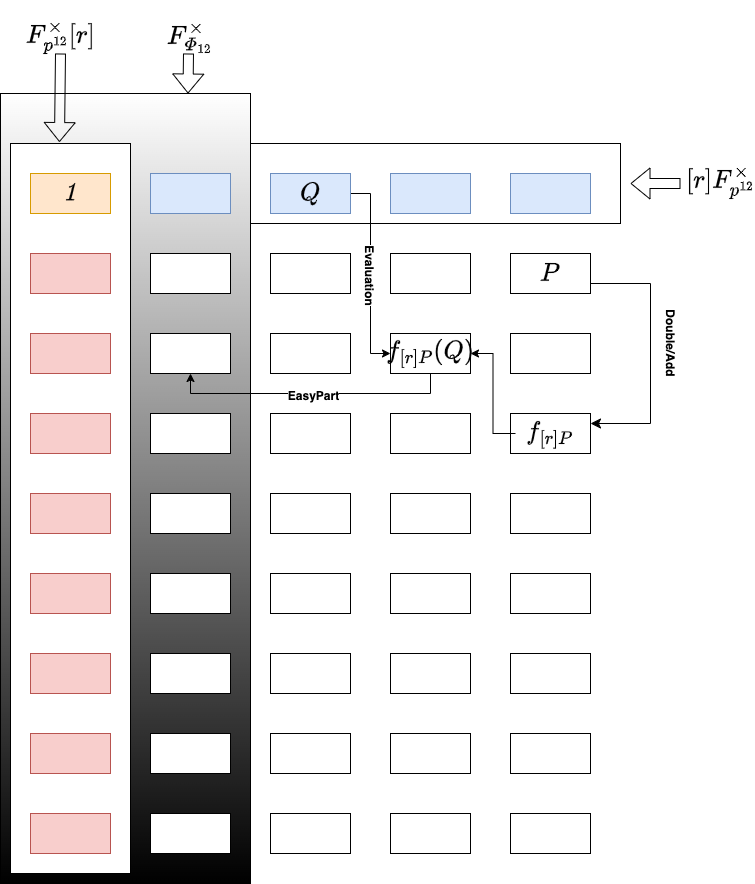
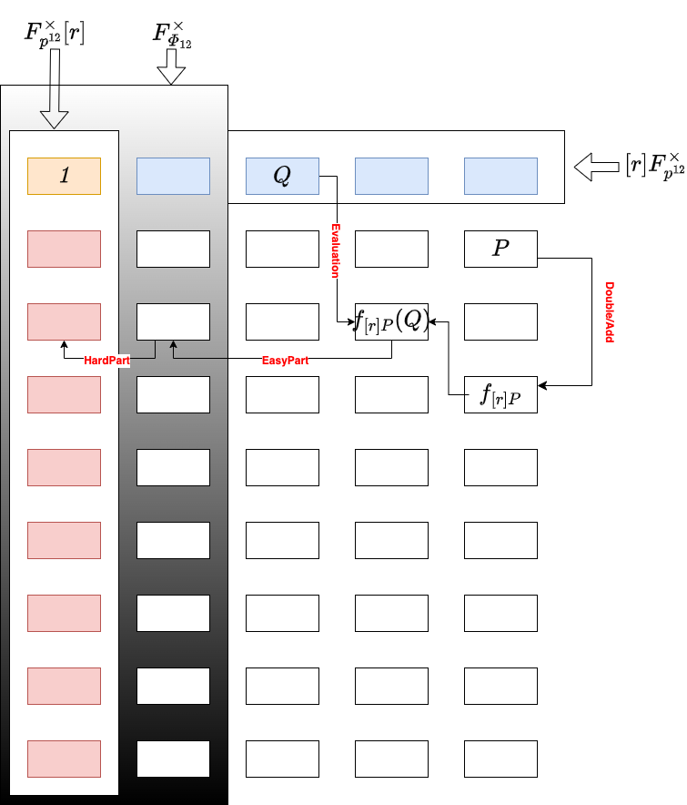

如果你是一个SNARKER，你一定听说过KZG Commitment，如果你听说过KZG Commitment，那你一定知道Pairing。这就是我们接下来要讨论的，大家如果想了解Pairing 的底层逻辑(pairing primitives)，或者对它的应用感兴趣都可以留言，或者添加文末的联系方式。
至今距离pairing 的“尘埃落定”其实已经大概有6、7年的时间了，网上的资料很完整，但关于它的讨论(工程上)仍未止步，比如On Proving Pairings.
本文所有内容源自hackmd上的note，欢迎follow.
这里没有的
-
group theory, field theory and homomorphism
相关基本概念在这里不会涵盖，详情请查阅任何abstract algebraic 相关的书籍
-
divisors
相关基本概念在这里不会涵盖，对于了解Pairing 来说 Pairing for Beginners 已足够，如果你还想深入理解最好翻阅一下 algebraic geometry 相关的书籍
-
structure of elliptic curve over finite field and its arithmetics (scalar multiplication)
理论和算法部分这里不会涵盖，详情可以查阅 Guide to Elliptic Curve Cryptography
-
hash to curve
bytes string 映射到或者 上的点，简单说就是hash，是pairing 应用层面必备的一大模块，后续会详细补充这块内容
-
non-affine coordinate
affine coordinate 其实只是椭圆曲线元素表达的需要，它的scalar multiplication 并不经济，所以实际计算上都会用non-affine coordinate 来替代，后续会补上这块内容
-
advanced scalar multiplication algorithms GLV/GLS
特定的曲线上充分利用同态映射来加速scalar multiplication，同时还能(GPU)并行化处理也是当下硬件加速卖点，后续也会再补上
这里有的
本篇文章集中讨论了各种Pairing 变体:
和它们的具体实现。除此之外，我们还包含了一些重要的实现层面的tricks，尤其是:
关于代码
-
主要集中在Pairing的计算逻辑上，包括Miller Loop 和 Final Exponentiation。目前已经完成验证。
Finite Field 和 Elliptic Curves的算术运算并没有逐一实现，用的是Sagemath库自带的 Galois Field and Elliptic Curve.
-
从零着手，从 Bigint 算术运算到 Finite Field 算术运算到 Elliptic Curve 算术运算，再到 Pairings Primitives。底层的逻辑已经验证完毕，目前在Pairings验证过程中 …
公共信息
- Modulus of base prime field (characteristic) with 381-bits:
- Embedding degree, or the degree of full extension field :
- Elliptic Curve (additive group) over base prime field :
- Elliptic Curve (additive group) over extension field :
- Largest prime factor of with 255-bits:
- Trace of Frobenius:
- Parameter for BLS12 Pairing-family: for:
- Target (multiplicative) group with order defined over :
Pairing 的演进
Weil Reciprocity
and 是两个定义在椭圆曲线上的divisor function, ，它们的divisor support 不存在交集, 。然后我们就有:
其中 表示函数 的divisor, 表示divisor 在函数 上的evaluation。 也类似.
如果我们放松上面的约束条件, 如果 , 然后就有一个更general 的 Weil Reciprocity 公式: 其中 ，当两个divisor and 的support 存在交集, 否则 .
Details of general definition of Weil Reciprocity, you can refer THEOREM 3.9 of Guide to Pairing-based Cryptography.
那么Weil Reciprocity 究竟有什么意义呢? 它直接诞生了 Weil Pairing.
Weil Pairing
定义
假定在 -torsion subgroup 中有两个线性不相交的点, . 基于此，假定 , and , 同样 . 它们同样满足 .
然后我们就有:
这样，Weil Pairing 就出现了: 其中 , 是乘法group 上的-次单位元根 , 也就是说 .
如何选择合适的divisor and
理论上我们需要选择合适的 divisors and ，让它们的support 不相交, 你可能会奇怪，这应该有很多种选择，那么 and 不同的选择会导致最终pairing的结果 不一样吗？
事实上 Weil Pairing 的结果 它是与 and 的选择无关的。下面简单证明一下：
假定 and 都是与divisor 等效的divisor, 那么一定存在另外一个中间divisor 使得 , 然后:
根据 Weil Reciprocity 定理, 由于 , 所以 . 因此:
既然跟divisor 具体的选择无关，那我们就选择最简单的 divisors： . 这时，它们的support 是存在交集的，根据上面那个general Weil Reciprocity公式，我们就有Weil Pairing的正式定义:
如何对divisor and 进行evaluate
divisor 的evaluation 可以被进行一步简化:
只要 and 是线性不相关的，即 .
注意上面的符号是 不是 ，也就是说它们evaluation的值可能不同，但并不会对Weil Pairing 最终的结果 有影响，即：
因此 Weil Pairing 简化为:
Miller Loop 使得divisor function的evaluation 变得更容易实现，是工程上的一大步。很明显 Weil Pairing 是几何上对称的, 它实际上需要运行两次 Miller Loop. 看起来并不太经济? 实际上单次就够了，这就是 Tate Pairing 要做的事情.
算法
直接参考Guide to Pairing-based Cryptography 中的Algorithm 3.2:

Tate Pairing
你可能会奇怪divisor function的evaluation 长什么样子? 由于 , 然后 , 所以 . 运用coset 的特性, Tate Pairing 就出现了:
它分两步走, Miller Loop 和 Final Exponentiation. 这也是我们所说的 Final Exponentiation 的由来。
定义
其实 Tate Pairing 有一个更正式的定义: 其中 , 并不是-torsion subgroup 中的元素, 它不再跟一样被定义在group 。而是商群的某个元素, 确切的说就是group 上的任意一个与 线性不相关的元素. 看起来似乎是把约束条件放得更宽了。
既然这样，那么divisor function的evaluation值 (result of Miller Loop)会变成什么样子呢? 同样，它一定也是商群的某个元素，确切的说就是group 上的任意一个元素，这也更加坚定了后续提指Final Expoentiation的必要性:
似乎Tate Pairing 要比Weil Pairing更通用 (more relaxed constraints) ，是吧?
Since , usually for the convenience of computation(utilization of Frobenius Automorphism) we let , namely , is so-called Base Group. While , namely , is so-called Trace-zero Group. :::
算法
同样直接参考 Guide to Pairing-based Cryptography 的Algorithm 3.3:

Miller Loop
你可能已经注意到， Weil Pairing 中Miller Loop 的长度 and Tate Pairing 的都是 (bit length of ).
理论上 Tate Pairing 已经够实用了，至少实现起来是没有任何阻碍的了，所以后续的research 其实主要是针对工程实现上的优化，基本框架并没有改变。 基本集中在缩短 Miller Loop 的长度，以及更高效的提指 Final Expoentiation运算.
还有Miller Loop 更短的算法? 是的，但是我们需要深入挖掘一下乘法group 的结构.
Ate Pairing
在Ate Pairing中, 点 被严格约束在 中，同时点 也被约束在 中，即Frobenius Map： 充分利用Frobenius Map的特性，将大大降低pairing的计算成本。
Miller 算法的两个重要特性
关于这两个特性的proof，这里不再推演，熟悉divisor function 后很容易推导出来。
更短的 Miller Loop
由于, 假定 ，因此我们就有:
由于 , 然后 , 我们就有 , 因此:
看起来我们似乎可以用 替代 了, 但是这完全没有必要，因为 ，反而让Miller Loop 变得更长了。
如果 and , 然后 , 假定 , 类似地我们有:
根据上面的两个 Miller 算法的特性， 可以继续推导: 令 , 我们有:
由于 , 我们完全可以用 替换 , 但是如何找到这个 值呢?
Trace of Frobenius
根据 Hesse Bound 定理， 我们有: 令 其中 就是我们据说的Trace of Frobenius, 由于 , 然后 .
最后我们得到:
很明显 Tate Pairing 和 Ate Pairing 有着非常紧密的关系。 你可能已经注意到，这两个pairing的计算结果 很可能不相等，不用紧张，只是pairing策略的差异而已，并不影响它在乘法group 中的唯一性，这才是pairing 的最终目的。
事实上Ate Pairing 在做的就是找到与 的某个倍乘相关的数, 就是我们要找的,它满足 . 但是， 一定是最短的 Miller Loop吗? 可能是（也可能不是），下面写几行代码反证一下：
p = 103
r = 7
k = 6
for i in range(1, k):
print('lambda[{0}] = {1}'.format(i, (p ** i) % r))
运行结果：
lambda[1] = 5
lambda[2] = 4
lambda[3] = 6
lambda[4] = 2
lambda[5] = 3
很明显，并不是最小的， 才是。
Optimal Ate Pairing

在上面的 Ate Pairing 中, 我们直接地用 替换 后得到: 其中 , and .
在 Ate Pairing 中，我们有: 其中 , and .
基于此，我们可以找到二者之间的联系:
因此，Ate Pairing 经过 次方提指后变成: 暂时先把结论放这儿.
在Optimal Ate Pairing中把进行了更通用的定义：, and . 同样运用上面的 Miller 算法的特性, 我们把它的divisor function 进行展开:
其中:
然后 Ate Pairing 就被转换成了:
很明显 Ate Pairing 被划分成了两部分, 左边部分 是基于的 Ate Pairing (length of Miller Loop is )。
既然左边已经是一个Ate Pairing 了，那么右边部分 肯定也是一个Ate Pairing，只要 **。
所以Optimal Ate Pairing 正式定义就来了: 其中系数 都是尽可能小的数.
不用担心指数运算 , 它几乎是免费的，在充分运用 Frobenius Map后. Optimal Ate Pairing 要做的就是并行计算 and , 此时Miller Loop 的长度可能就是 .
可以如何找到这么一组系数 呢? 实际上它是一个关于 Lattice 的问题，感兴趣可以继续研究 Optimal Pairings.
有限域上的算术运算
BLS12-381 曲线的定义是这样的: 其中 。但是这个extension field 是如何构建的呢？
Pairing 中域的切换
为了对Pairing 底层的算术运算有个更直观的sense，下面简单介绍一下Tate/Ate pairings中域的切换。
假定定义在域 上的点，同时点 定义在域 上，实际上点 的坐标必须定义在域 的某个子域上 (先给出结论，后续有推理过程)，比如说 。整个过程，可以切分为4个部分：
-
Miller Loop
-
Double-Add
line function 不会改变所在的域，在哪个域，这个函数仍然在那个域，比如 :

-
Evaluation Line Function
比如，单个line function的evaluation：
最终evaluation 的结果， 不再定义在原本的域 上了.

-
-
Final Exponentiation
-
Easy Part
通过提指把Mill Loop 的结果 推进一个特殊的乘法group，这就是我们所说的 Cyclotomic Group， :

-
Hard Part
再次通过提指从Cyclotomic Group 拉到目标乘法group :

-
域塔 Tower Fields
定义
大家知道BLS12-381 Pairing中的目标group 是一个定义在上的-torsion multiplicative subgroup，我们经常表示为。
那么 是如何被构造出来的呢? 这就是tower fields 的由来：
在BLS12-381曲线上，extension field modulus的常量分别为:
模的由来：
is irreducible in
since is one root of , then we have is irreducible in
since is one root of , then we have is irreducible in
therefore we have
也就是说，域 上的算术运算可以通过域 上的算术运算来完成，同时域 的算术运算可以通过域 上的算术运算来完成，同样域 的算术运算可以通过base prime field 上的算术运算来完成。这就是我们据说的域塔 tower fields。
你可能已经注意到域的拓展 和 都是二次拓展 quadratic extension, 而 是三次拓展 cubic extension。所以 quadratic extension 和 cubic extension 在高阶extension field （比如）的算术运算中扮演着非常重要的角色。
Quadratic Extension 上的算术运算
这部分属于常规的计算逻辑，可以直接参考 Guide to Pairing-based Cryptography 5.2.1 章节。
Cubic Extension 上的算术运算
同样，这部分也可以直接参考 Guide to Pairing-based Cryptography 5.2.2 章节。
Cyclotomic Group 上的算术运算
分圆群 Cyclotomic group 在Pairing 的提指运算 Final Expoentiation 扮演着最核心的角色，特别是在 Tate/Ate Pairings中。既然是提指，那么主要就是平方 squaring 和指数 exponentiation 这两个算子。下面主要推演一下squaring 的全过程。
假定 ，表示base prime field，那么如何计算 ?
首先，我们需要利用tower fields来表示 ，比如：
假定 : 则:
由于 ， 我们继续推进:
所以最终我们会有3次域 上的squaring (分别是 )， 和5次域 上的multiplication (分别是 )。
域 上的乘法运算可能会比较昂贵，那么有没有改进的方法呢? YES
Squaring Friendly Field
如果 , 而且 是一个非常大的素数characteristic，乘法group 的阶可以用多个cyclotomic polymomials 的连乘来表示:
这里我们称 为 Squaring Friendly Field.
举个例子乘法group :
其中:
换句话说，乘法group 的阶可以被因子分解成：
所以乘法group 中一定存在一个阶为 的subgroup 。
因此，我们得到一个非常重要的结论:
更快的 Squaring 算子
回到上面的Squaring 运算，有 :
Squaring 之后:
现在的问题是如何有效地计算 ?
在Tate/Ate Pairing的Final Exponentiation中 ，根据上面刚刚推演出的结论:
其中:
但是如何有效地计算诸如 ? 我们拆开来看:
-
根据Frobenius Map 的特性，我们很容易得到： (先给出结论，在后面Frobenius Map 部分会进行推理)。因此上面的式子简化成:
-
由于 ，因此： 其中 是域上的 primitive 6-th root of unity，也就是说 .
More properties of primitive 6-th root of unity in :
综合在一起，我们得到:
应用Frobenius map 后:
应用Squaring Friendly Field的特性，我们得到：
展开后，得到:
所以上面的三个乘法运算被转换成:
最终:
域上的5个乘法，只剩下1个乘法，共轭 完全免费。
Twist 的力量
为什么要twist
尽管我们通过tower fields 来表示 ，不幸的是 仍然有点儿贵，尤其应用在链上或者微型终端设备上。所以我们可以简单地把twist 当作pairing实现层面的一种高级的trick来看待。
我们可以通过sextic-twist(twist degree 是 6) 把高阶域 上的元素映射到低阶域 : 但是如何做呢?
Sextic Twist
一个定义在高阶extension field 上的椭圆曲线 :
另一个定义在低阶extension field 上的twisted 椭圆曲线 ，它与有着twist isomorphism关系： 其中 ， is both non-quadratic and non-cubic residual, 也就是说:
因此:
但是如何选择一个合适的 呢? 似乎 刚好把域 拓展到了 。幸运的是，刚好 就是这么一个数。
According to above tower fields, we can easily have:
所以这个twisted 的椭圆曲线就是 :-1: :
这就是我们想要的 吗？一定是我们要找的twist参数吗？
不一定，原本 是定义在上的，也就是上面的的subgroup ，但是 上的运算成本较高，所以想通过twist 的方式把 上的点一一映射到，这样运算成本会大大降低。但是，可能会存在: 也就是说可能不能整除 ，曲线 上可能不存在一个-torsion subgroup。这是不满足我们一一映射的目的: 所以我们在选择twist 参数里要特别小心。那如何找到满足条件的twist 参数呢？其实这个参数只有两种可能性。
如果 不合适，那么 一定是那个合适的(论文 也有提及)，大家也可以试一下，最终我们确定 所在的曲线: 其中 或者 and .
Sextic Twist Map
下面简单介绍一下两group and 元素之间的映射关系：
-
Twist Operation
把 上的元素映射到 上:
-
Untwist Operation
把 上的元素映射到 上:
twist/untwist的过程是很便宜的，尤其是当我们把期间用到的常量 预先算出来。最后明确一下，既然要用twist trick，那么将尽可能把运算都限制在低阶的域上，只是在必要的时候才通过untwist 把值转换到高阶域上。
Frobenius Map 的力量
同twist 一样，Frobenius Map 同样是pairing 实现层面的高级trick。它在extension field的运算过程中扮演着非常重要的角色，特别是Tate/Ate Pairings 中的提指Final Expoentiation。
下面我们粗略感受一下它分别在extension field 上有哪些特性：
Frobenius Map over
假定:
其中 and , we have .
然后:
由于 一定是个奇数，所以我们有:
结论： Frobenius Map 只要 .
Frobenius Map over
假定:
其中 and , 我们有 , and
然后: 其中 表示在 共轭 次 , and 表示在上norm 次.
两个方面需要考虑:
-
for
We can easily have .
-
for
Since , then , so we have:
结论： 只要 .
Frobenius Map over
假定:
其中 and .
类似地,
当 , 由于 , 然后我们就有 . 由于 , and , 然后我们就有:
因此:
结论： 只要 .
Frobenius Map and Conjunction
有一个 quadratic extension: 其中 , 假定 , 其中 . 如果我们想要在上执行次 Frobenius Map: 由于 is non-quadratic residual, 也就是说 , 因此我们有: 完全免费!
比如 .
Curve 上的算术运算
这里将是Scalar Multiplication 的主要战场。在BLS12-381中有两条曲线我们需要实例化， and ： 其中 是定义在Base Prime Field 上的 -torsion curve (subgroup) , 是定义在sextic-twisted field (relative to )， 上的 -torsion twisted curve (subgroup).
上的算术运算
其中 .
定义在 Base Prime Field 上，它只是 的一个-torsion subgroup. 所以它的算术运算(Scalar Multiplication) 跟一样，定义在。
上的算术运算
其中 .
类似地， 只是上的 -torsion subgroup, 它的算术运算 (Scalar Multiplication) 跟一样，定义在extension field 上（上面有介绍extension field 的运算）。
上的算术运算
目标group 实际上并不是曲线 (additional group)，而是一个-torsion multiplicative subgroup，通常表示为 。它的算术运算与 一样.
Python Implementation
Instantiation of Curve BLS12-381
Trace/Unti-trace Map
Trace Map: where is the full extension degree. It maps any -torsion points of into .
Untri-trace Map: It maps any -torsion points of into , whose Trace Map result is .
Since is defined over , so . While , this is where Trace-zero subgroup come from.
def anti_trace_map(point, d, p, E):
return d * point - trace_map(point, d, p, E)
def trace_map(point, d, p, E):
result = point
point_t = point
for i in range(1, d):
point_x, point_y = list(point_t)[0], list(point_t)[1]
point_t = E(point_x ** p, point_y ** p)
result = result + point_t
return result
Finite Field Conversion
## map element of Fp2 into Fp12
def into_Fp12(e_fp2, beta, F, gen):
a = beta.polynomial().list()
if len(a) == 1 :
a = a + [0]
e = e_fp2.polynomial().list()
if len(e) == 1:
e = e + [0]
return F(e[0]) + F(e[1]) * (gen ** 6 - F(a[0])) / F(a[1])
## map elements of Fp12 into Fp2 with critical conditions
def into_Fp2(e_fp12, F, gen):
coef = e_fp12.polynomial().list()
zero_coeff = [1 for i in range(12) if ((len(coef) > i) and (i != 0) and (i != 6) and (F(coef[i]) == F(0)))]
assert(reduce(mul, zero_coeff) == 1)
return (F(coef[0]) + F(coef[6])) + gen * F(coef[6])
## map elements of Fp12_t into Fp12
def Fp12_t_into_Fp12(e_fp12_t, F, gen):
coef = list(e_fp12_t)
result = []
for i in range(len(coef)):
result.append([(F(c) * (((gen ** 6) - F(1)) ** j) * (gen ** i)) for j, c in enumerate(coef[i].polynomial().list())])
return reduce(add, sum(result, []))
Twist and Untwist
def untwist(x, y, t_x, t_y):
return x / t_x, y / t_y
def twist(x, y, t_x, t_y):
return x * t_x, y * t_y
Definition of
denotes curve defined base prime field, namely
p = 4002409555221667393417789825735904156556882819939007885332058136124031650490837864442687629129015664037894272559787
q = 52435875175126190479447740508185965837690552500527637822603658699938581184513
A = 0
B = 4
## base prime field
Fp = GF(p)
## E1 over base prime field, map any point on Efp into the q-torsion subgroup
Efp = EllipticCurve(Fp, [A, B])
r_E = Efp.order()
cofactor_E1 = r_E // q
# g_E1 = Efp(0)
# while g_E1 == Efp(0):
# a = Efp.random_element()
# g_E1 = cofactor * a
g_E1 = Efp(
2262513090815062280530798313005799329941626325687549893214867945091568948276660786250917700289878433394123885724147,
3165530325623507257754644679249908411459467330345960501615736676710739703656949057125324800107717061311272030899084
)
assert(q * g_E1 == Efp(0))
## trace map on E1 is trival, stays on E1
assert(trace_map(g_E1, 12, p, Efp) == 12 * g_E1)
print('\n ##################################### Curve G1: \n cofactor = {}, \n generator = {}, \n order = {} \n'.format(cofactor_E1, g_E1, r_E))
Definition of
denotes curve defined over field , namely , who is -twisted with . In BLS12-381 (sextic-twist), .
########## Fp2 = Fp[X] / X^2 - alpha
## alpha = -1
d = 2
alpha = Fp(-1)
X = Fp['X'].gen()
pol2 = X ** d - alpha
assert(pol2.is_irreducible() == True)
Fp2 = GF(p ** d, 'u', modulus = pol2)
u = Fp2.gen()
## Fp12 = Fp2[X] / X^6 - beta
d = 6
beta = u + 1
XX = Fp2['XX'].gen()
pol12 = XX ** d - beta
assert(pol2.is_irreducible() == True)
beta_t = beta
Efp2_t = EllipticCurve(Fp2, [A, B * beta_t])
## find the proper twisted curve, who has a q-torsion subgroup which is isomorphism with Efpk's one
if Efp2_t.order() % q != 0:
beta_t = beta ** 5
Efp2_t = EllipticCurve(Fp2, [A, B * beta_t])
Definition of
denotes twisted curve defined over , namely .
## twist curve E' over Fp12
Fp12_t = Fp2.extension(pol12, 'x')
Efp12_t = Efp2_t.change_ring(Fp12_t)
print('\n Twist curve E defined over Fp12: {}\n'.format(Efp12_t))
Definition of
denotes curve defined over , namely .
## Fp12 = Fp[X] / X^12 - 2X^6 + 2
Fp12 = GF(p ** 12, 'w', modulus = X ** 12 - 2 * (X ** 6) + 2)
w = Fp12.gen()
## constant parameters of twist/untwist
beta_t_x = w ** 2
beta_t_y = w ** 3
## make sure g_E2 is in the q-torsion subgroup on Efp2_t
r_E2_t = Efp2_t.order()
cofactor_E2_t = r_E2_t // q
# g_E2 = Efp2_t(0)
# while g_E2 == Efp2_t(0):
# b = Efp2_t.random_element()
# g_E2 = cofactor_E2_t * b
g_E2 = Efp2_t([
[
1265792444950586559339325656560420460408530841056393412024045461464508512562612331578200132635472221512040207420018,
12405554917932443612178266677500354121343140278261928092817953758979290953103361135966895680930226449483176258412
],
[
3186142311182140170664472972219788815967440631281796388401764195993124196896119214281909067240924132200570679195848,
1062539859838502367600126754068373748370820338894390252225574631210227991825937548921368149527995055326277175720251
],
])
assert(q * g_E2 == Efp2_t(0))
print('\n #################################### Curve G2: \n cofactor = {}, \n generator = {}, \n order = {} \n'.format(cofactor_E2_t, g_E2, r_E2_t))
## make sure g_E2 is in Fp12 first, uniform the field before untwist
Efp12 = Efp.change_ring(Fp12)
g_E12 = into_E12(g_E2, beta, Fp, w, beta_t_x, beta_t_y, Efp12)
## For the convenience of do Frobenius Map within Fp2, namely (x^p, y^p)
## traditionaly need 3 steps:
## 1. untwist (x, y) to (x', y'), (x', y') = (x / beta_t_x, y / beta_t_y)
## 2. do Frobenius Map within Fp12, (x'^p, y'^p) = (x^p / beta_t_x^p, y^p / beta_t_y^p)
## 3. twist back to (x, y), (x, y) = (x'^p * beta_t_x, y'^p * beta_t_y) = (x^p / beta_t_x^{p - 1}, y^p / beta_t_y^{p - 1})
##
## Someone may wonder why wouldn't we do Frobenius Map within Fp2 directly?
## Since one time of Frobenius Map within Fp2, phi(P), may skip out of G2, though P belongs to G2,
## so we must do it within the FULL EXTENSION Fp12.
##
## Caching beta_t_x^{-(p - 1)} or beta_t_y^{-(p - 1)} would be much preferable
##
twist_frob_x = into_Fp2(1 / (beta_t_x ** (p - 1)), Fp, u)
twist_frob_y = into_Fp2(1 / (beta_t_y ** (p - 1)), Fp, u)
print('\n Twist parameters: cubic_root(beta_t)^-1 = {}, sqrt(beta_t)^-1 = {} \n'.format(beta_t_x, beta_t_y))
print('\n Twist parameters for Frobenius Map within Fp2: \n cubic_root(beta_t)^-(p - 1) = {}, \n sqrt(beta_t)^-(p - 1) = {} \n'.format(
twist_frob_x, twist_frob_y
))
print('\n ==================================== DEBUG ====================================\n ')
## make sure g_E12 is in the zero-trace subgroup of q-torsion
assert(q * g_E12 == Efp12(0))
assert(trace_map(g_E12, 12, p, Efp12) == Efp12(0))
print('\n #### UNTWIST: Point of E2 \n {} \n is mapped into E12 \n {} \n successfully! \n'.format(g_E2, g_E12))
## make sure it can be twisted back
x, y = twist(list(g_E12)[0], list(g_E12)[1], beta_t_x, beta_t_y)
x, y = (into_Fp2(x, Fp, u), into_Fp2(y, Fp, u))
assert(Efp2_t(x, y) == g_E2)
print('\n #### TWIST: Point of E12 \n {} \n is mapped into E2 \n {} \n successfully! \n'.format(g_E12, Efp2_t(x, y)))
Weil Pairing
Evaluation of Double-line Function
## evaluation of double line divisor function
## arithmetics on fields, not on multiplicative group
def double_line(line_point, eval_point, E, phi, reverse = False):
######################## arithemtic on finite field of line_point
## lambda = 3x^2 / 2y
(x_L, y_L) = (list(line_point)[0], list(line_point)[1])
(x_E, y_E) = (list(eval_point)[0], list(eval_point)[1])
alpha = (3 * x_L^2) / (2 * y_L)
x_2L = alpha * alpha - 2 * x_L
y_2L = -y_L - alpha * (x_2L - x_L)
######################## arithmetic on mixed finite field
## x_E, y_E \in F2
## y_L, x_L, alpha, x_2L \in F1
if reverse:
## evaluation of slop line l_2T
e_1 = phi(y_E) - y_L - alpha * (phi(x_E) - x_L)
## evaluation of vertical line v_2T
e_2 = phi(x_E) - x_2L
else:
## evaluation of slop line l_2T
e_1 = y_E - phi(y_L) - phi(alpha) * (x_E - phi(x_L))
## evaluation of vertical line v_2T
e_2 = x_E - phi(x_2L)
return E(x_2L, y_2L), e_1, e_2
Evaluation of Add-line Function
## evaluation of add line divisor function
## arithmetics on fields, not on multiplicative group
def add_line(line_left_point, line_right_point, eval_point, E, phi, reverse = False):
######################## arithemtic on finite field of line_point
## lambda = (y2 - y1) / (x2 - x1)
(x_L, y_L) = (list(line_left_point)[0], list(line_left_point)[1])
(x_R, y_R) = (list(line_right_point)[0], list(line_right_point)[1])
(x_E, y_E) = (list(eval_point)[0], list(eval_point)[1])
alpha = (y_L - y_R) / (x_L - x_R)
x_LR = alpha * alpha - x_L - x_R
y_LR = -y_L - alpha * (x_LR - x_L)
######################## arithmetic on mixed finite field
## x_E, y_E \in F2
## y_L, x_L, alpha, x_LR \in F1
if reverse:
## evaluation of slop line l_{T + P}
e_1 = phi(y_E) - y_L - alpha * (phi(x_E) - x_L)
## evaluation of vertical line v_{T + P}
e_2 = phi(x_E) - x_LR
else:
## evaluation of slop line l_{T + P}
e_1 = y_E - phi(y_L) - phi(alpha) * (x_E - phi(x_L))
## evaluation of vertical line v_{T + P}
e_2 = x_E - phi(x_LR)
return E(x_LR, y_LR), e_1, e_2
Miller Loop
## Miller Loop of Weil Pairing
def MillerLoop(P, Q, G, q, phi, reverse = False):
T = P
f1 = 1
f2 = 1
e_bits = [int(i) for i in bin(q)[2:]]
## last bit cannot be evaluated, since the slope would be a vertical line
for i in range(1, len(e_bits)):
if (i == len(e_bits) - 1) and (e_bits[i] == 0):
f1 = f1 * (list(Q)[0] - list(T)[0])
T = 2 * T
break
T, e_1, e_2 = double_line(T, Q, G, phi, reverse)
f1, f2 = (f1 * f1 * e_1, f2 * f2 * e_2)
if (i == len(e_bits) - 1) and (e_bits[i] == 1):
f1 = f1 * (list(Q)[0] - list(T)[0])
T = T + P
break
if e_bits[i] == 1:
T, e_1, e_2 = add_line(T, P, Q, G, phi, reverse)
f1, f2 = (f1 * e_1, f2 * e_2)
assert(T == G(0))
return f1 / f2
Testation of Weil Pairing
## Weil Pairing Entry
def WeilPairing(P, Qx, G1, G12, q, phi):
t0 = time.perf_counter()
f_rP_Q = MillerLoop(P, Qx, G1, q, phi, False)
t1 = time.perf_counter()
f_rQ_P = MillerLoop(Qx, P, G12, q, phi, True)
t2 = time.perf_counter()
mu_r = ((-1) ** q) * (f_rP_Q / f_rQ_P)
print('\n ##[Weil Pairing] Time consuming: t[f(P, Qx)] = {:.3f}, t[f(Qx, P)] = {:.3f}'.format(t1 - t0, t2 - t1))
return mu_r
G1, G2_t, G12, G12_t = (Efp, Efp2_t, Efp12, Efp12_t)
C1, C2 = (cofactor_E1, cofactor_E2_t)
## make sure they are in G1 and G2_t repectively
P, Q = (C1 * G1.random_element(), C2 * G2_t.random_element())
assert(q * P == G1(0))
assert(q * Q == G2_t(0))
## untwist from E2_t to E12: Q -> Qx
Qx = into_E12(Q, beta, Fp, w, beta_t_x, beta_t_y, G12)
assert(q * Qx == G12(0))
assert(trace_map(Qx, 12, p, G12) == G12(0))
####################################### Weil Pairing Testation
## P is defined over E(Fp), Qx is defined over E(Fpk)
## phi maps Fp to Fp12
phi = Hom(Fp, Fp12)(Fp.gen().minpoly().roots(Fp12)[0][0])
assert(P.curve() is not Qx.curve())
mu_r_weil = WeilPairing(P, Qx, G1, G12, q, phi)
## make sure pairing result is in q-torsion subgroup
assert(mu_r_weil ** q == Fp12(1))
#######################################
Output:
## Time consuming: t[f(P, Qx)] = 0.060, t[f(Qx, P)] = 0.095
Obviousely time cost of is much more than that of , since is defined over Base Prime Field, , while is defined over Full Extension Field, .
- Double-add on is more expensive than on
- Function evaluation is absolutely defined over , so this part would be almost equal
Tate Pairing
Actually in Tate Pairing the vertical line evaluation can be ommited due to the Final Exponentiation. Let’s prove that!
Recall twist/ untwist operation: where , .
According to definition of embedding degree, is the minimal value satisfying , namely , so we must have .
Also since , assuming , then we must have .
Before untwisting , after untwisting . The vertical line funcion , the evaluation would be , where is untwisted value and . Finaly we have .
Optimized Evaluation of Double-line Function
## evaluation of double line divisor function
## arithmetics on fields, not on multiplicative group
def double_line(line_point, eval_point, E, phi, reverse = False):
######################## arithemtic on finite field of line_point
## lambda = 3x^2 / 2y
(x_L, y_L) = (list(line_point)[0], list(line_point)[1])
(x_E, y_E) = (list(eval_point)[0], list(eval_point)[1])
alpha = (3 * x_L^2) / (2 * y_L)
x_2L = alpha * alpha - 2 * x_L
y_2L = -y_L - alpha * (x_2L - x_L)
######################## arithmetic on mixed finite field
## x_E, y_E \in F2
## y_L, x_L, alpha, x_2L \in F1
if reverse:
## evaluation of slop line l_2T
e_1 = phi(y_E) - y_L - alpha * (phi(x_E) - x_L)
# ## evaluation of vertical line v_2T
# e_2 = phi(x_E) - x_2L
else:
## evaluation of slop line l_2T
e_1 = y_E - phi(y_L) - phi(alpha) * (x_E - phi(x_L))
# ## evaluation of vertical line v_2T
# e_2 = x_E - phi(x_2L)
return E(x_2L, y_2L), e_1
Optimized Evaluation of Add-line Function
## evaluation of add line divisor function
## arithmetics on fields, not on multiplicative group
def add_line(line_left_point, line_right_point, eval_point, E, phi, reverse = False):
######################## arithemtic on finite field of line_point
## lambda = (y2 - y1) / (x2 - x1)
(x_L, y_L) = (list(line_left_point)[0], list(line_left_point)[1])
(x_R, y_R) = (list(line_right_point)[0], list(line_right_point)[1])
(x_E, y_E) = (list(eval_point)[0], list(eval_point)[1])
alpha = (y_L - y_R) / (x_L - x_R)
x_LR = alpha * alpha - x_L - x_R
y_LR = -y_L - alpha * (x_LR - x_L)
######################## arithmetic on mixed finite field
## x_E, y_E \in F2
## y_L, x_L, alpha, x_LR \in F1
if reverse:
## evaluation of slop line l_{T + P}
e_1 = phi(y_E) - y_L - alpha * (phi(x_E) - x_L)
# ## evaluation of vertical line v_{T + P}
# e_2 = phi(x_E) - x_LR
else:
## evaluation of slop line l_{T + P}
e_1 = y_E - phi(y_L) - phi(alpha) * (x_E - phi(x_L))
# ## evaluation of vertical line v_{T + P}
# e_2 = x_E - phi(x_LR)
return E(x_LR, y_LR), e_1
Optimized Miller Loop
## General Miller Loop Entry
def MillerLoop(P, Q, G, q, phi, reverse = False):
T = P
f1 = 1
f2 = 1
e_bits = [int(i) for i in bin(q)[2:]]
print('Miller Loop Length: {}'.format(len(e_bits)))
## last bit cannot be evaluated, since the slope would be a vertical line
for i in range(1, len(e_bits)):
if (i == len(e_bits) - 1) and (e_bits[i] == 0):
f1 = f1 * (list(Q)[0] - list(T)[0])
T = 2 * T
break
T, e_1 = double_line(T, Q, G, phi, reverse)
f1 = f1 * f1 * e_1
if (i == len(e_bits) - 1) and (e_bits[i] == 1):
f1 = f1 * (list(Q)[0] - list(T)[0])
T = T + P
break
if e_bits[i] == 1:
T, e_1 = add_line(T, P, Q, G, phi, reverse)
f1 = f1 * e_1
assert(T == G(0))
return f1
Easy-part of Final Exponentiation
For illustration convenience, we does not use Frobenius Map trick here, just directly use time-consuming trivial power. Actually it’s almost free cost after using Frobenius Map.
## trival implementation of easy part, Frobenius not used here actually
## exp = (p^6 - 1) * (p^2 + 1)
## 2 * Frobenius + 2 * Mul + 1 * Inv
def easy_part(f):
ff = f
## 1 * Frobenius
t0 = f ** (p ** 6)
## 1 * Inv
t1 = 1 / f
## 1 * Mul
f = t0 * t1
## 1 * Frobenius
t0 = f ** (p ** 2)
## 1 * Mul
f = t0 * f
actual = ff ** (((p ** 6) - 1) * ((p ** 2) + 1))
assert(actual == f)
return f
Hard-part of Final Exponentiation
Same as above, we does not use Frobenius Map here.
As we know, the hard part is arithmetics on Cyclotomic Subgroup, namely . According to On the Computation of the Optimal Ate Pairing at the 192-bit Security Level, the power of hard part is not , but three times of that: where: In conclusion :
## reference from Algorithm 1 of "On the Computation of the Optimal Ate Pairing at the 192-bit Security Level"
## trival implementation of hard part, Frobenius not used here actually
## exp = (p^4 - p^2 + 1) / r
def hard_part(f, u, p, q):
## 1 * Sqr + 1 * Inv
t0 = 1 / (f * f)
## 1 * Pow
t5 = f ** u
## 1 * Sqr
t1 = t5 * t5
## 1 * Mul
t3 = t0 * t5
## 1 * Pow
t0 = t3 ** u
## 1 * Pow
t2 = t0 ** u
## 1 * Pow
t4 = t2 ** u
## 1 * Mul
t4 = t1 * t4
## 1 * Pow
t1 = t4 ** u
## 1 * Inv
t3 = 1 / t3
## 1 * Mul
t1 = t3 * t1
## 1 * Mul
t1 = t1 * f # f^\lambda_0
# 1 * Inv
t3 = 1 / f
## 1 * Mul
t0 = t0 * f
## 1 * Frobenius
t0 = t0 ** (p ** 3) # f^\lambda_3
## 1 * Mul
t4 = t3 * t4
## 1 * Frobenius
t4 = t4 ** p # f^\lambda_1
## 1 * Mul
t5 = t2 * t5
## 1 * Frobenius
t5 = t5 ** (p ** 2) # f^\lambda_2
## 3 * Mul
t5 = t5 * t0
t5 = t5 * t4
t5 = t5 * t1
## third power of actual pairing result
actual = f ** (((p ** 4) - (p ** 2) + 1) // q)
assert(t5 == actual ** 3)
assert(t5 ** q == 1)
return t5
Final Exponentiation
## Final Exponentiation Entry
def FinalExponentiation(f, p, k, q, u, trivial = True):
if trivial:
mu_r = f ** (((p ** k) - 1) // q)
else:
t0 = time.perf_counter()
f = easy_part(f)
t1 = time.perf_counter()
mu_r = hard_part(f, u, p, q)
t2 = time.perf_counter()
print('\n ##[Hard Part of Tate Pairing] Time consuming: t[easy] = {:.3f}, t[hard] = {:.3f}'.format(t1 - t0, t2 - t1))
return mu_r
Testation of Tate Pairing
## Tate Pairing Entry
def TatePairing(P, Qx, G1, q, phi, p, k, u, trivial = True):
t0 = time.perf_counter()
f = MillerLoop(P, Qx, G1, q, phi, False)
t1 = time.perf_counter()
mu_r = FinalExponentiation(f, p, k, q, u, trivial)
t2 = time.perf_counter()
print('\n ##[Tate Pairing] Time consuming: t[f(P, Qx)] = {:.3f}, t[exp] = {:.3f}'.format(t1 - t0, t2 - t1))
return mu_r
G1, G2_t, G12, G12_t = (Efp, Efp2_t, Efp12, Efp12_t)
C1, C2 = (cofactor_E1, cofactor_E2_t)
## make sure they are in G1 and G2_t repectively
P, Q = (C1 * G1.random_element(), C2 * G2_t.random_element())
assert(q * P == G1(0))
assert(q * Q == G2_t(0))
## untwist from E2_t to E12: Q -> Qx
Qx = into_E12(Q, beta, Fp, w, beta_t_x, beta_t_y, G12)
assert(q * Qx == G12(0))
assert(trace_map(Qx, 12, p, G12) == G12(0))
####################################### Trivial Tate Pairing Testation
mu_r_tate_1 = TatePairing(P, Qx, G1, q, phi, p, k, True)
assert(mu_r_tate ** q == Fp12(1))
#######################################
####################################### parameter for p(x), q(x), and t(x)
x = -15132376222941642752
t = x + 1
## p = ((x - 1)^2 * (x^4 - x^2 + 1)) / 3 + x
assert((pow((x - 1), 2) * (pow(x, 4) - pow(x, 2) + 1)) // 3 + x == p)
## q = x^4 - x^2 + 1
assert(pow(x, 4) - pow(x, 2) + 1 == q)
## t = x + 1
assert(abs(p + 1 - t) == Efp.order())
####################################### Nontrivial Tate Pairing Testation
mu_r_tate_2 = TatePairing(P, Qx, G1, q, phi, p, k, x, False)
assert(mu_r_tate ** q == Fp12(1))
## The hard part is 3rd power of pairing
assert(mu_r_tate_1 ** 3 == mu_r_tate_2)
The running output:
Miller Loop Length: 255
##[Tate Pairing] Time consuming: t[f(P, Qx)] = 0.039, t[exp] = 0.079
Miller Loop Length: 255
##[Hard Part of Tate Pairing] Time consuming: t[easy] = 0.114, t[hard] = 0.082
##[Tate Pairing] Time consuming: t[f(P, Qx)] = 0.051, t[exp] = 0.195
After applying Frobenius Map, the time cost of final exponentiation would greately reduced.
Ate Pairing
Miller Loop
In Ate Pairing, since , actually is a vertical line, the last step of Miller Loop cannot evaluated directly, so we used a specific manner to deal with it.
But in Ate Pairing, which is far away from , no need to worry , so we will strip that specific manner used in Tate Pairing.
## General Miller Loop Entry
def MillerLoop(P, Q, G, q, phi, reverse = False):
## if power q is negative or not
P = P if q > 0 else -P
q = q if q > 0 else -q
T = P
f1 = 1
e_bits = [int(i) for i in bin(q)[2:]]
print('Miller Loop Length: {}'.format(len(e_bits)))
for i in range(1, len(e_bits)):
##### strip this specific manner used in Tate Pairing
# if (i == len(e_bits) - 1) and (e_bits[i] == 0):
# f1 = f1 * (list(Q)[0] - list(T)[0])
# T = 2 * T
# break
T, e_1 = double_line(T, Q, G, phi, reverse)
f1 = f1 * f1 * e_1
##### strip this specific manner used in Tate Pairing
# if (i == len(e_bits) - 1) and (e_bits[i] == 1):
# f1 = f1 * (list(Q)[0] - list(T)[0])
# T = T + P
# break
if e_bits[i] == 1:
T, e_1 = add_line(T, P, Q, G, phi, reverse)
f1 = f1 * e_1
return f1
Testation of Ate Pairing
Notice that in curve BLS12-381, the parameter for polynomials is a negative one:
where .
Therefore we must deal with it properly in Miller Loop before looping.
## Ate Pairing Entry
def AtePairing(P, Qx, G1, q, phi, p, k, u, T, trivial = True):
t0 = time.perf_counter()
f = MillerLoop(P, Qx, G1, T, phi, False)
t1 = time.perf_counter()
mu_r = FinalExponentiation(f, p, k, q, u, trivial)
t2 = time.perf_counter()
print('\n ##[Ate Pairing] Time consuming: t[f(P, Qx)] = {:.3f}, t[exp] = {:.3f}'.format(t1 - t0, t2 - t1))
return mu_r
G1, G2_t, G12, G12_t = (Efp, Efp2_t, Efp12, Efp12_t)
C1, C2 = (cofactor_E1, cofactor_E2_t)
## make sure they are in G1 and G2_t repectively
P, Q = (C1 * G1.random_element(), C2 * G2_t.random_element())
assert(q * P == G1(0))
assert(q * Q == G2_t(0))
## untwist from E2_t to E12: Q -> Qx
Qx = into_E12(Q, beta, Fp, w, beta_t_x, beta_t_y, G12)
assert(q * Qx == G12(0))
assert(trace_map(Qx, 12, p, G12) == G12(0))
## parameter for p(x), q(x), and t(x)
x = -15132376222941642752
t = x + 1
## p = ((x - 1)^2 * (x^4 - x^2 + 1)) / 3 + x
assert((pow((x - 1), 2) * (pow(x, 4) - pow(x, 2) + 1)) // 3 + x == p)
## q = x^4 - x^2 + 1
assert(pow(x, 4) - pow(x, 2) + 1 == q)
## t = x + 1
assert(abs(p + 1 - t) == Efp.order())
## p \equiv T \mod q
T = t - 1
####################################### Ate Pairing Testation
mu_r_ate = AtePairing(P, Qx, G1, q, phi, p, k, x, T, False)
assert(mu_r_ate ** q == Fp12(1))
The running output:
Miller Loop Length: 64
##[Hard Part of Ate Pairing] Time consuming: t[easy] = 0.105, t[hard] = 0.081
##[Ate Pairing] Time consuming: t[f(P, Qx)] = 0.007, t[exp] = 0.186
Obviousely time cost of Miller Loop is greatly reduced, since is far more less than (64 vs 255).
Rust Implementation
Much testation work need to be done, code to be updated…
References
[1] A note on twists for pairing friendly curves
[2] Pairing-Friendly Elliptic Curves of Prime Order
[4] Guide to Pairing-based Cryptography
[5] Faster pairing computations on curves with high-degree twists
[6] Optimal Pairings
[7] On the Computation of the Optimal Ate Pairing at the 192-bit Security Level
[9] Faster Squaring in the Cyclotomic Subgroup of Sixth Degree Extensions
[10] A Guide to Plane Algebraic Curves
Touch
- twitter: @pingzhouyuan
- email: joepayne@163.com
- wechat: paynejoe